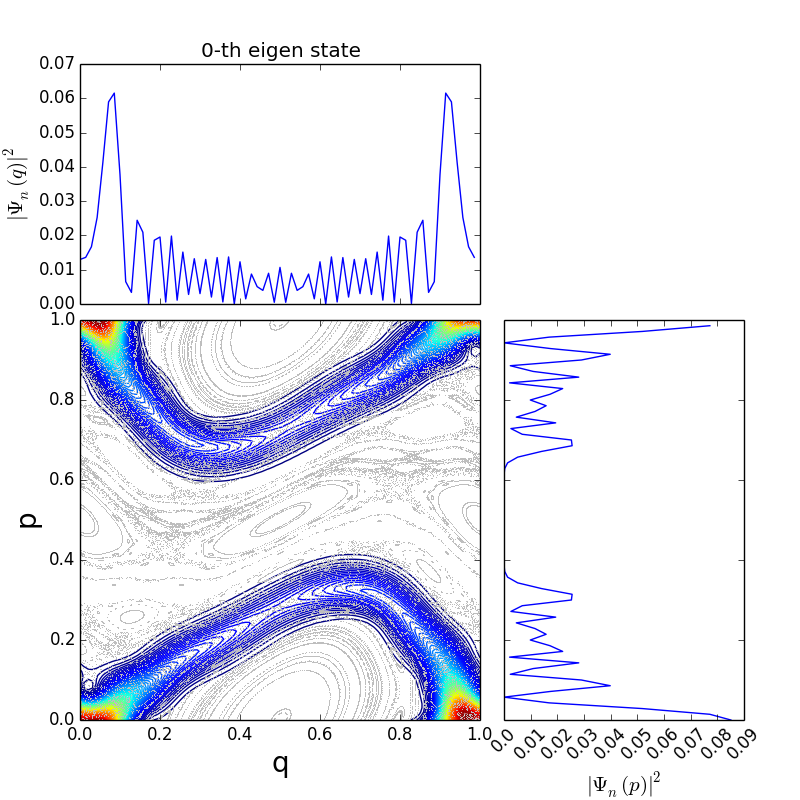
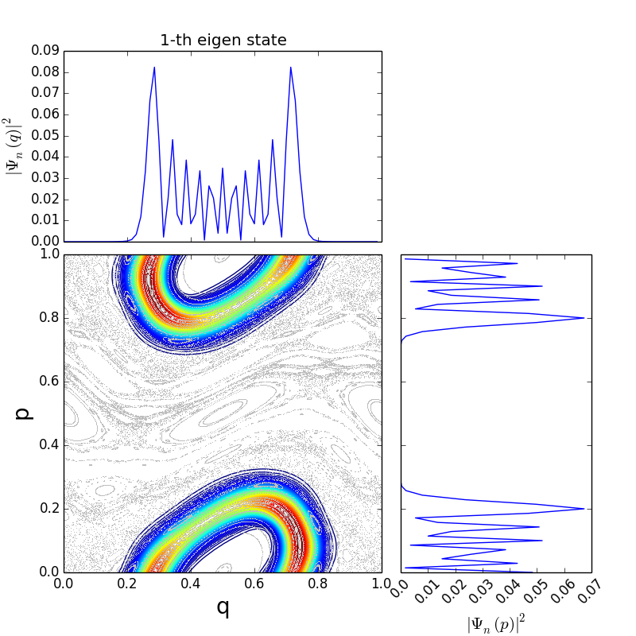

本チュートリアルでは
- numpy
- matplotlib
- SimpleQmap
のパッケージを用います． sampleなので，参考程度と思ってください．
Classical dynamics¶
標準写像を用いた時間発展は
import SimpleQmap as S
import numpy as np
import matplotlib.pyplot as plt
def evolv(q,p, Map):
pp = p - Map.func0(q)
qq = q + Map.func1(pp)
return qq, pp
k=1.0
Map = S.StandardMap(k)
sample=100
iter = 500
q = np.random.random(sample)
p = np.random.random(sample)
for x in zip(q,p):
q, p = x[0],x[1]
traj = [np.array([]),np.array([])]
for i in range(iter):
q,p = evolv(q,p,Map)
q = q - np.floor(q)
p = p - np.floor(p)
for j, x in enumerate([q,p]):
traj[j] = np.append(traj[j], x)
plt.plot(traj[0],traj[1], '.',markersize=3)
plt.xlabel('q',fontsize=22)
plt.ylabel('p',fontsize=22)
plt.savefig("std.png")
#plt.show()
で行っている．位相空間中の軌道群をplotすると，このような結果が得られるはずである．
{kind=link}
Quantum dynamics: initial value problem¶
与えられた状態の時間発展を解く． いま初期条件として
を与える．SimpleQmapにおける時間発展は
の演算順序で行われているので，初期条件をsetする際にFouier 逆変換を用いて
\(q\) -表示に変換している．Sample コードは以下の通りである．
from SimpleQmap import Qmap, StandardMap
import matplotlib.pyplot as plt
import numpy as np
dim = 70
k = 1.0
qmin, qmax = 0.0, 1.0
pmin, pmax = -2.0, 2.0
tmax = 7
map = StandardMap(k=k)
domain = [[qmin,qmax],[pmin,pmax]]
qmap = Qmap(map, dim, domain)
#state = qmap.getState().cs(0.5,0.5)
state = qmap.getState()
state.insert(int(dim/2), 1.0+0.j)
init = state.p2q()
qmap.setInit(init)
for i in range(tmax):
state = qmap.getIn()
print("%d-th step" % i, state.norm())
pvec = state.prep()
zero_index = (pvec.abs2() == 0.0)
pvec[zero_index] = 1e-32 + 0.0j
par = 1.*i/tmax
plt.plot(state.scaleinfo.x[1],pvec.abs2(), '-',linewidth=3,color=plt.cm.jet(par), label='%d step' % i)
# state.savetxt("evolv_qrep_%d.dat" % i)
qmap.evolve()
plt.ylim(1e-28,1)
plt.ylabel(r"$|\psi_n(p)|^2$",fontsize=28)
plt.xlabel(r"$p$", fontsize=28)
plt.semilogy()
plt.legend()
plt.tight_layout()
plt.savefig("evolv_prep.png")
plt.show()
計算結果は
{kind=link}
となる．より詳しい解説は http://japanichaos.appspot.com/Quantum.html#id1 を参考にしてほしい． (x軸のscaleは \(2\pi\) 倍すれば同一の結果である)
Quantum dynamics: eigen value problem¶
次に時間発展演算子 \(\hat{U}\) の固有値問題，
を解く． ここで， \(|\Psi_n\rangle\) は(擬)固有状態，であり， \(u_n\) は固有値である． Floquet の定理より
として与えられ， \(\epsilon_n \in \mathbb{R}\) は(擬)固有位相と呼ばれる．
Sampleコードは以下の通りである．
from SimpleQmap import Qmap, StandardMap
import matplotlib.pyplot as plt
import numpy as np
dim = 70
k = 1.0
qmin, qmax = 0.0, 1.0
pmin, pmax = 0.0, 1.0
domain = [[qmin,qmax],[pmin,pmax]]
map = StandardMap(k=k)
qmap = Qmap(map, dim, domain)
evals, evecs = qmap.eigen() # get eigen value and eigen vectors
print("is unitary?",np.all(np.abs(np.abs(evals*np.conj(evals))-np.ones(dim))<1e-12))
fig = plt.figure(figsize=(6,6))
theta = np.linspace(-np.pi,np.pi, 500)
z = np.exp(-1.j*theta)
plt.plot(evals.real, evals.imag, 'o',markersize=8)
plt.plot(z.real, z.imag, '-k')
plt.xlim(-1.1,1.1)
plt.ylim(-1.1,1.1)
plt.grid()
plt.xlabel(r"$Re[u_n]$",fontsize=20)
plt.ylabel(r"$Im[u_n]$",fontsize=20)
plt.tight_layout()
plt.savefig("eigen_values.png")
plt.show()
#for i, evec in enumerate(evecs):
# evec.savetxt("eigen_qrep_%i.dat" % i)
{kind=link}
Quantum dynamics: phase space representation¶
前節で固有値について説明したので，次に固有関数について調べる． 固有関数 \(|\Psi_n \rangle\) はq-表示やp-表示を用いることが慣例的であるが， 古典力学(位相空間)との対応を考える上で伏見表示(擬位相空間分布)も重要になる． 詳細な伏見表示定義はここでは説明しない．言葉で説明すると 位相空間上を適当にgridを切り格子点にCoherent stateとの内積の絶対値2乗を取ることで位相空間における 確率密度を測る方法である．
Sample コードは次の通りであるが，はじめに の最後の bash make.sh を実行する必要がある．
from SimpleQmap import Qmap, StandardMap
import numpy as np
import matplotlib.pyplot as plt
from matplotlib.ticker import NullFormatter
nullfmt = NullFormatter()
def frame(figsize=(8,8)):
left, width = 0.1, 0.5
bottom, height = 0.1, 0.5
bottom_h = left_h = left+width+0.02
r1 = [left, bottom, width, height]
r2 = [left, bottom_h, width, 0.3]
r3 = [left_h+0.01, bottom, 0.3, height]
fig = plt.figure(1,figsize=figsize)
ax1 = plt.axes(r1)
ax2 = plt.axes(r2)
ax3 = plt.axes(r3)
ax2.xaxis.set_major_formatter(nullfmt)
ax3.yaxis.set_major_formatter(nullfmt)
ax = [ax1,ax2,ax3]
return ax
def cmap(q,p,Map):
pp = p - Map.func0(q)
qq = q + Map.func1(pp)
return qq, pp
def trajectory(Map, sample=100,iter=500):
q = np.random.random(sample)
p = np.random.random(sample)
traj = [np.zeros([]),np.zeros([])]
for i in range(iter):
q,p = cmap(q,p,Map)
q = q - np.floor(q)
p = p - np.floor(p)
for j,x in enumerate([q,p]):
traj[j] = np.append(traj[j],x)
return traj
dim = 70
k = 1.0
qmin, qmax = 0.0, 1.0
pmin, pmax = 0.0, 1.0
domain = [[qmin,qmax],[pmin,pmax]]
map = StandardMap(k=k)
qmap = Qmap(map, dim, domain)
evals, evecs = qmap.eigen() # get eigen value and eigen vectors
traj = trajectory(map)
for i, evec in enumerate(evecs):
print(i)
ax = frame()
X,Y,Z = evec.hsmrep(100,100)
ax[0].contour(X,Y,Z,100,cmap=plt.cm.jet)
ax[0].plot(traj[0],traj[1],',',color='#bebebe')
ax[0].set_xlabel("q",fontsize=20)
ax[0].set_ylabel("p",fontsize=20)
ax[1].plot(evec.scaleinfo.x[0],evec.qrep().abs2())
ax[1].set_title("%d-th eigen state" % i)
ax[1].set_ylabel(r"$|\Psi_n(q)|^2$",fontsize=15)
ax[2].plot(evec.prep().abs2(),evec.scaleinfo.x[1])
ax[2].set_xlabel(r"$|\Psi_n(p)|^2$",fontsize=15)
ax[2].set_xticklabels(ax[2].get_xticks(),rotation=45)
plt.savefig("eigen_state_%d.png" % i)
plt.close()
if i == 3:
break
# plt.show()
典型的な計算結果は
|  |  |
{kind=link}
{kind=link}
となる．